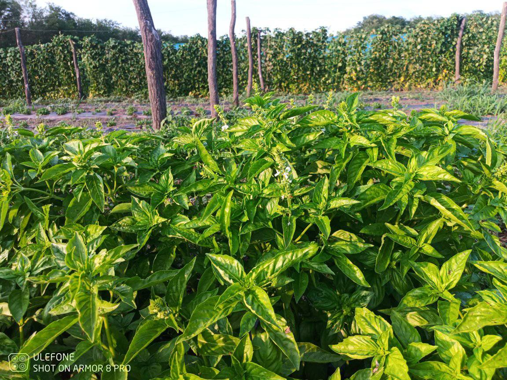
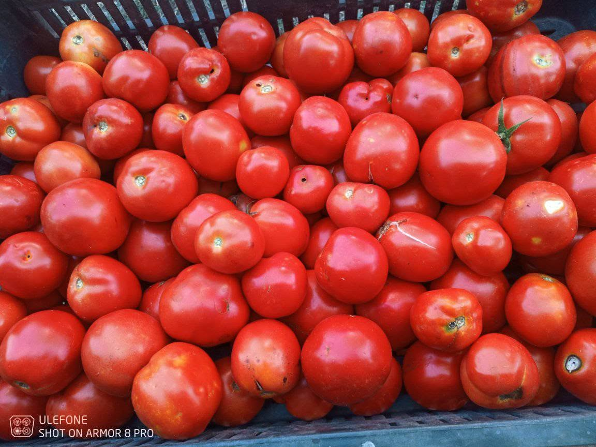
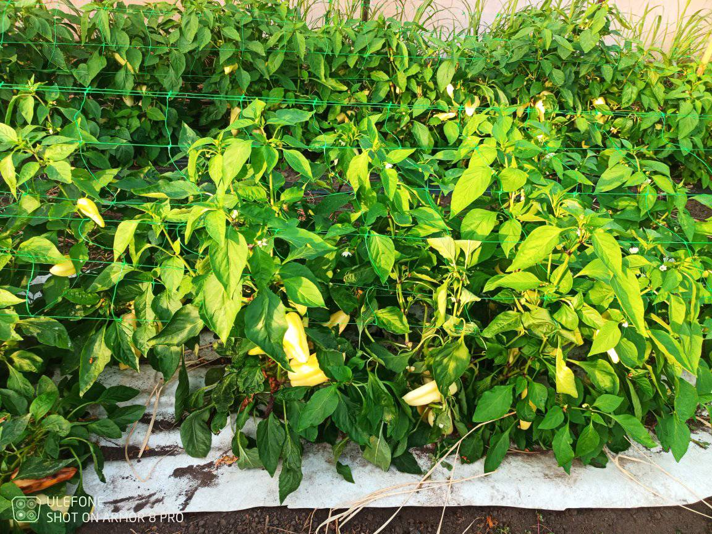
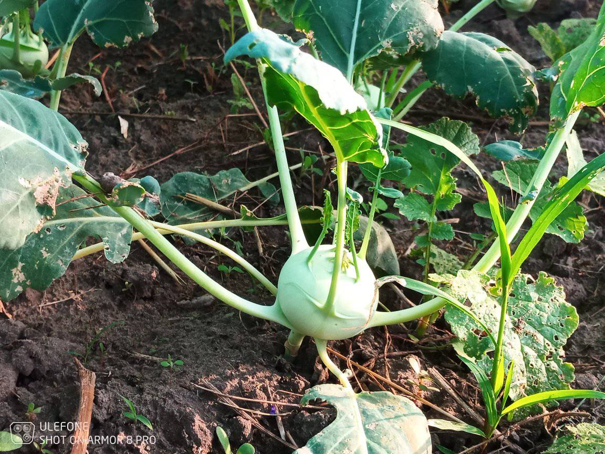

Kunszállás · Minősített biogazdaság · Est. 2013
Friss zöldség,
igazi közösség.
A Birs Közösség egy kunszállási biogazdaság és a hozzá tartozó budapesti tagok hálózata. Minden csütörtökön friss, szezonális csomag érkezik — vegyszermentes, becsületes, helyi termelésből.
Nem szupermarket.
Hanem valódi kapcsolat.
Kertünk Kunszálláson található, minősített biogazdaság. Héjjas Szilvia és nagyobbik fia gondozzák a földet nap mint nap — több mint 50 féle zöldséggel, fóliasátrakkal és egy újonnan telepített gyümölcsössel.
A Birs Közösségben nincs közvetítő, nincs felesleges lánc. A gazda és a tagok közvetlenül elköteleződnek egymás felé: megosztják a kockázatot, és együtt örülnek a termésnek.
Olvass többet rólunkMinden csütörtökön friss, szezonális zöldséges doboz Budapestre szállítva, hat különböző átadóponton.
Csütörtöki szállításA 2026-os szezon 90 fővel indult. Évközben is csatlakozhatsz — várólistán keresztül.
Jelentkezés nyitvaTagok számára évente egyszer lehetőség van meglátogatni a gazdaságot Kunszálláson, általában június közepén.
Évente egyszerA közösségi mezőgazdálkodás logikája
Egyszerű és becsületes modell: a fogyasztók előre elköteleződnek, a gazda pedig a közösség igényeire tervezhet.
Telefonon vagy emailen jelezd csatlakozási szándékod Szilvinél. Évközben is megteheted — várólistára kerülsz.
A tagok rendszeresen fizetendő átalánydíjért cserébe kapják a heti csomagot. A kockázat és a termés megosztott.
Minden csütörtökön hat budapesti átadópont egyikén veheted át a friss, szezonális zöldséges csomagot.
A Facebook csoportban recepteket cseréltek, kérdéseket tesztek fel — a csütörtök nemcsak szállítás, hanem találkozó is.
Mit találsz a dobozban?

Spenót, mángold, saláták — frissen vágva, heti rendszerességgel.

Több fajtában — koktél, beefsteak, fürtös — vegyszermentes talajon.

Édes és csípős fajták egyaránt, a szezon csúcsán bőséges termés.

Karalábé, retek, káposzta, kínai kel — a hűvösebb időszak sztárjai.
Sárgarépa, cékla, petrezselyem — téli tárolásra is alkalmas fajták.
Bazsalikom, kapor, petrezselyem, koriander frissen kötegezve.
Fokhagyma, vöröshagyma, póréhagyma — az alap minden konyhában.
Téli tárolásra is alkalmas fajták, amelyek hónapokig frissek maradnak.
„Olyan, mintha lenne egy saját kertem, csak nem nekem kell kapálni…"
— Egy Birs tag · Tudatos Vásárlók
Készen állsz a
friss kezdetre?
A 2026-os szezon már zajlik, de várólistára bármikor feliratkozhatsz. Évközben is van lehetőség csatlakozni.